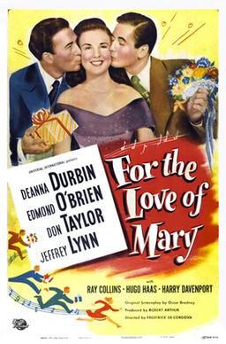
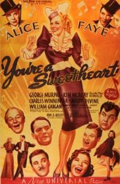
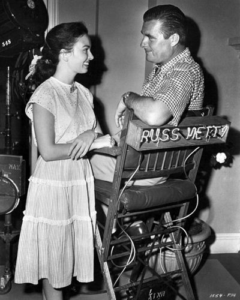
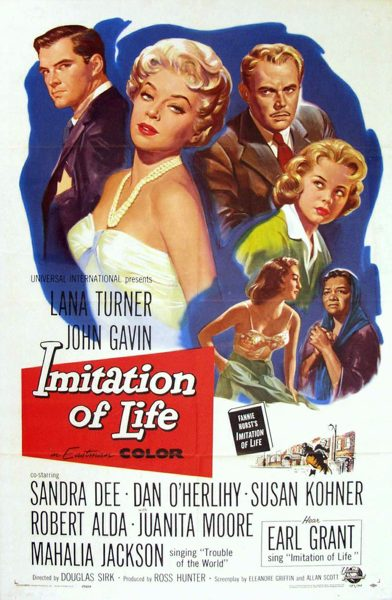

THE STANFORD THEATRE
Now Showing
·
Upcoming
·
Past
·
Search
January 4 - 31, 2013
January 2013 More Classics from Universal Pictures
7 bills
January 4 - 7

For the Love of Mary (1948)
90 min
Three Smart Girls (1936)
84 min
January 11 - 14
Show Boat (1936)
115 min
My Man Godfrey (1936)
94 min
January 15 - 17

You're a Sweetheart (1937)
96 min
Next Time We Love (1936)
87 min
January 18 - 21
A Double Life (1947)
104 min
The Dark Mirror (1946)
85 min
January 22 - 24

A Woman's Vengeance (1948)
96 min
Tower of London (1939)
92 min
January 25 - 28
Bedtime for Bonzo (1951)
83 min
Harvey (1950)
104 min
January 29 - 31

Imitation of Life (1959)
124 min
Written on the Wind (1956)
99 min
Archived
•
StanfordTheatre.org Original